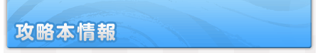
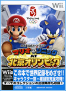
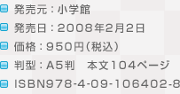

キャラクター別・種目別に、全競技の攻略法を完全解説。すべてのミッションの攻略法と全コレクション一覧も収録。マリオとソニック、そしてその仲間たちでプレイする、北京オリンピックオフィシャルゲーム（Ｗｉｉ版）唯一の攻略本。
この本で、オリンピック記録＆世界記録をめざそう！
●ご購入についてのお問い合わせ先：TEL:03-5281-3555（小学館販売）
●本の内容を「立ち読み」しよう！
http://www.21010.net/
（ニンテンドーネット）